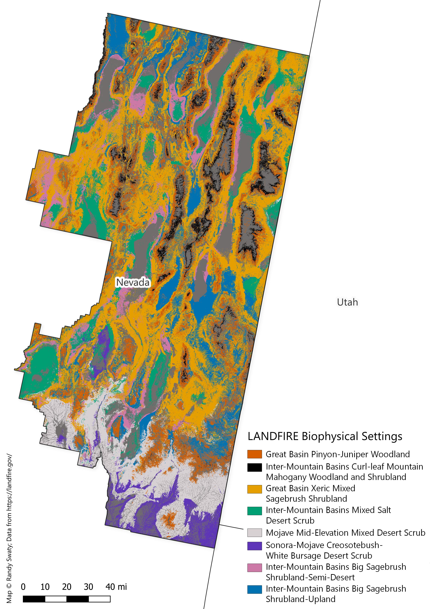
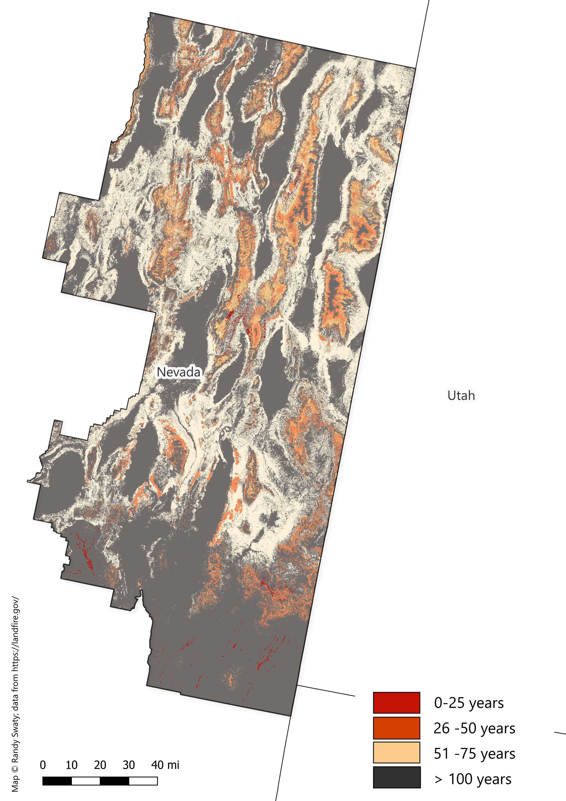

Past
LANDFIRE’s Biophysical Settings (BpSs)
BpS models represent the vegetation system that may have been dominant on the landscape prior to Euro-American settlement. These models are based on a combination of the current environment and an approximation of the historical disturbance regime. Read more.
Check out this 3-minute tutorial for a quick refresher on the basics of Biophysical Settings Models.
Use this page as a starting point to explore the most prevalent BpSs for your analysis area. In addition to the charts and maps, the historical disturbance data can be directly accessed using this site.
Most prevalent Biophysical Settings

Historical Fire Regimes


Historical disturbances per ecosystem
Data table
| ZONE | BPS_MODEL | BPS_NAME | GROUPVEG | FRI_REPLAC | FRI_MIXED | FRI_SURFAC | FRG_NEW | ACRES | REL_PERCENT |
|---|---|---|---|---|---|---|---|---|---|
| 12 | 10810_6_12_13_17 | Inter-Mountain Basins Mixed Salt Desert Scrub | Shrubland | 1,978 | -9,999 | -9,999 | V-B | 11,649,700 | 16.9 |
| 12 | 10790_6_9_10_12_16_17_18 | Great Basin Xeric Mixed Sagebrush Shrubland | Shrubland | 94 | 831 | -9,999 | IV-A | 7,594,623 | 11.0 |
| 12 | 10804_6_12_15_16_17_18_23_24_25 | Inter-Mountain Basins Big Sagebrush Shrubland-Upland | Shrubland | 120 | -9,999 | -9,999 | IV-B | 5,531,970 | 8.0 |
| 17 | 10790_6_9_10_12_16_17_18 | Great Basin Xeric Mixed Sagebrush Shrubland | Shrubland | 94 | 831 | -9,999 | IV-A | 3,994,982 | 5.8 |
| 13 | 10870_4_6_12_13_14_15_17_24_25 | Sonora-Mojave Creosotebush-White Bursage Desert Scrub | Shrubland | 329 | -9,999 | -9,999 | V-A | 3,427,230 | 5.0 |
| 12 | 10803_6_12_15_16_17_18_23_24_25 | Inter-Mountain Basins Big Sagebrush Shrubland-Semi-Desert | Shrubland | 151 | -9,999 | -9,999 | IV-B | 3,388,702 | 4.9 |
| 13 | 10820_4_13 | Mojave Mid-Elevation Mixed Desert Scrub | Shrubland | 399 | -9,999 | -9,999 | V-A | 2,995,658 | 4.4 |
| 12 | 10190_6_7_9_12_16_17_18_19 | Great Basin Pinyon-Juniper Woodland | Conifer | 865 | 898 | -9,999 | V-A | 3,036,507 | 4.4 |
| 12 | 11530_6_10_12_13_17_18_19_21 | Inter-Mountain Basins Greasewood Flat | Shrubland | 1,024 | -9,999 | -9,999 | V-B | 2,613,479 | 3.8 |
| 0 | 0 | Barren-Rock/Sand/Clay | Barren-Rock/Sand/Clay | -9,999 | -9,999 | -9,999 | -9999 | 2,332,411 | 3.4 |
| 12 | 11260_6_12_17_18_28 | Inter-Mountain Basins Montane Sagebrush Steppe | Shrubland | 49 | -9,999 | -9,999 | IV-A | 1,637,429 | 2.4 |
| 18 | 11250_6_12_13_15_16_17_18_23_24_25_28 | Inter-Mountain Basins Big Sagebrush Steppe | Shrubland | 117 | -9,999 | -9,999 | IV-B | 1,379,985 | 2.0 |
| 17 | 10804_6_12_15_16_17_18_23_24_25 | Inter-Mountain Basins Big Sagebrush Shrubland-Upland | Shrubland | 120 | -9,999 | -9,999 | IV-B | 1,370,868 | 2.0 |
| 12 | 10820_12_15_16_17_23_24 | Mojave Mid-Elevation Mixed Desert Scrub | Shrubland | 815 | -9,999 | -9,999 | V-B | 1,174,406 | 1.7 |
| 13 | 10010 | Inter-Mountain Basins Sparsely Vegetated Systems | Sparse | -9,999 | -9,999 | -9,999 | -9999 | 1,112,025 | 1.6 |
| 12 | 11540_6_12_16_17 | Inter-Mountain Basins Montane Riparian Systems | Riparian | 378 | -9,999 | -9,999 | V-A | 974,875 | 1.4 |
| 17 | 10190_6_7_9_12_16_17_18_19 | Great Basin Pinyon-Juniper Woodland | Conifer | 865 | 898 | -9,999 | V-A | 901,479 | 1.3 |
| 17 | 11530_6_10_12_13_17_18_19_21 | Inter-Mountain Basins Greasewood Flat | Shrubland | 1,024 | -9,999 | -9,999 | V-B | 867,809 | 1.3 |
| 18 | 10790_6_9_10_12_16_17_18 | Great Basin Xeric Mixed Sagebrush Shrubland | Shrubland | 94 | 831 | -9,999 | IV-A | 875,430 | 1.3 |
| 12 | 10010 | Inter-Mountain Basins Sparsely Vegetated Systems | Sparse | -9,999 | -9,999 | -9,999 | -9999 | 827,740 | 1.2 |
| 17 | 10810_6_12_13_17 | Inter-Mountain Basins Mixed Salt Desert Scrub | Shrubland | 1,978 | -9,999 | -9,999 | V-B | 859,433 | 1.2 |
| 9 | 11250_1_7_8_9_10_19 | Inter-Mountain Basins Big Sagebrush Steppe | Shrubland | 59 | -9,999 | -9,999 | IV-A | 753,993 | 1.1 |
| 9 | 10790_6_9_10_12_16_17_18 | Great Basin Xeric Mixed Sagebrush Shrubland | Shrubland | 94 | 831 | -9,999 | IV-A | 648,866 | 0.9 |
| 6 | 11260_6_12_17_18_28 | Inter-Mountain Basins Montane Sagebrush Steppe | Shrubland | 49 | -9,999 | -9,999 | IV-A | 538,985 | 0.8 |
| 18 | 11260_6_12_17_18_28 | Inter-Mountain Basins Montane Sagebrush Steppe | Shrubland | 49 | -9,999 | -9,999 | IV-A | 451,871 | 0.7 |
| 0 | 0 | Open Water | Open Water | -9,999 | -9,999 | -9,999 | -9999 | 411,567 | 0.6 |
| 13 | 11552_13_14_15 | North American Warm Desert Riparian Systems-Stringers | Riparian | 735 | -9,999 | -9,999 | V-B | 394,633 | 0.6 |
| 6 | 10790_6_9_10_12_16_17_18 | Great Basin Xeric Mixed Sagebrush Shrubland | Shrubland | 94 | 831 | -9,999 | IV-A | 407,717 | 0.6 |
| 12 | 10110_6_10_12_17_18_19 | Rocky Mountain Aspen Forest and Woodland | Hardwood | 68 | 57 | -9,999 | I-C | 343,253 | 0.5 |
| 12 | 10620_6_12_17_18 | Inter-Mountain Basins Curl-leaf Mountain Mahogany Woodland and Shrubland | Shrubland | 288 | 149 | 238 | III-A | 361,926 | 0.5 |
| 17 | 11260_6_12_17_18_28 | Inter-Mountain Basins Montane Sagebrush Steppe | Shrubland | 49 | -9,999 | -9,999 | IV-A | 333,075 | 0.5 |
| 13 | 10190_13_14 | Great Basin Pinyon-Juniper Woodland | Conifer | 474 | 337 | 780 | III-B | 265,331 | 0.4 |
| 9 | 11260_1_7_8_9_10_19 | Inter-Mountain Basins Montane Sagebrush Steppe | Shrubland | 31 | -9,999 | -9,999 | II-C | 261,491 | 0.4 |
| 12 | 11270_10_12_13_17_18 | Inter-Mountain Basins Semi-Desert Shrub-Steppe | Shrubland | 225 | -9,999 | -9,999 | V-A | 267,462 | 0.4 |
| 17 | 10620_6_12_17_18 | Inter-Mountain Basins Curl-leaf Mountain Mahogany Woodland and Shrubland | Shrubland | 288 | 149 | 238 | III-A | 276,846 | 0.4 |
| 17 | 10820_12_15_16_17_23_24 | Mojave Mid-Elevation Mixed Desert Scrub | Shrubland | 815 | -9,999 | -9,999 | V-B | 262,452 | 0.4 |
| 17 | 10803_6_12_15_16_17_18_23_24_25 | Inter-Mountain Basins Big Sagebrush Shrubland-Semi-Desert | Shrubland | 151 | -9,999 | -9,999 | IV-B | 292,545 | 0.4 |
| 13 | 10040 | North American Warm Desert Sparsely Vegetated Systems | Sparse | -9,999 | -9,999 | -9,999 | -9999 | 223,220 | 0.3 |
| 13 | 11550_13_14 | North American Warm Desert Riparian Systems | Riparian | 785 | 23 | -9,999 | I-C | 196,995 | 0.3 |
| 6 | 10310_2_3_4_5_6_12 | California Montane Jeffrey Pine(-Ponderosa Pine) Woodland | Conifer | 165 | 84 | 11 | I-B | 218,064 | 0.3 |
| 17 | 11540_6_12_16_17 | Inter-Mountain Basins Montane Riparian Systems | Riparian | 378 | -9,999 | -9,999 | V-A | 212,207 | 0.3 |
| 9 | 10810_7_8_9 | Inter-Mountain Basins Mixed Salt Desert Scrub | Shrubland | 698 | -9,999 | -9,999 | V-B | 110,648 | 0.2 |
| 12 | 10870_4_6_12_13_14_15_17_24_25 | Sonora-Mojave Creosotebush-White Bursage Desert Scrub | Shrubland | 329 | -9,999 | -9,999 | V-A | 112,365 | 0.2 |
| 12 | 11030_6_7_12_13_16_17_23 | Great Basin Semi-Desert Chaparral | Shrubland | 50 | -9,999 | -9,999 | IV-A | 147,314 | 0.2 |
| 12 | 11250_6_12_13_15_16_17_18_23_24_25_28 | Inter-Mountain Basins Big Sagebrush Steppe | Shrubland | 117 | -9,999 | -9,999 | IV-B | 107,764 | 0.2 |
| 17 | 11030_6_7_12_13_16_17_23 | Great Basin Semi-Desert Chaparral | Shrubland | 50 | -9,999 | -9,999 | IV-A | 110,948 | 0.2 |
| 18 | 10110_6_10_12_17_18_19 | Rocky Mountain Aspen Forest and Woodland | Hardwood | 68 | 57 | -9,999 | I-C | 110,095 | 0.2 |
| 6 | 10803_6_12_15_16_17_18_23_24_25 | Inter-Mountain Basins Big Sagebrush Shrubland-Semi-Desert | Shrubland | 151 | -9,999 | -9,999 | IV-B | 120,977 | 0.2 |
| 6 | 10804_6_12_15_16_17_18_23_24_25 | Inter-Mountain Basins Big Sagebrush Shrubland-Upland | Shrubland | 120 | -9,999 | -9,999 | IV-B | 123,432 | 0.2 |
| 13 | 10810_6_12_13_17 | Inter-Mountain Basins Mixed Salt Desert Scrub | Shrubland | 1,978 | -9,999 | -9,999 | V-B | 49,652 | 0.1 |
| 6 | 10010 | Inter-Mountain Basins Sparsely Vegetated Systems | Sparse | -9,999 | -9,999 | -9,999 | -9999 | 79,465 | 0.1 |
| 6 | 10190_6_7_9_12_16_17_18_19 | Great Basin Pinyon-Juniper Woodland | Conifer | 865 | 898 | -9,999 | V-A | 81,541 | 0.1 |
| 6 | 10322_6 | Mediterranean California Red Fir Forest-Southern Sierra | Conifer | 294 | 317 | 78 | III-A | 48,350 | 0.1 |
| 9 | 10010 | Inter-Mountain Basins Sparsely Vegetated Systems | Sparse | -9,999 | -9,999 | -9,999 | -9999 | 39,468 | 0.1 |
| 9 | 10110_9 | Rocky Mountain Aspen Forest and Woodland | Hardwood | 59 | 50 | -9,999 | I-C | 98,205 | 0.1 |
| 9 | 11530_7_8_9 | Inter-Mountain Basins Greasewood Flat | Shrubland | 1,019 | -9,999 | -9,999 | V-B | 59,087 | 0.1 |
| 12 | 10200_6_9_12_17 | Inter-Mountain Basins Subalpine Limber-Bristlecone Pine Woodland | Conifer | 497 | -9,999 | 200 | III-B | 75,366 | 0.1 |
| 12 | 10520_12 | Southern Rocky Mountain Mesic Montane Mixed Conifer Forest and Woodland | Conifer | 186 | 91 | 72 | I-C | 41,001 | 0.1 |
| 12 | 10880_12_13_14_25 | Sonora-Mojave Mixed Salt Desert Scrub | Shrubland | -9,999 | -9,999 | -9,999 | -9999 | 84,067 | 0.1 |
| 12 | 11350_7_8_9_10_12_17_18 | Inter-Mountain Basins Semi-Desert Grassland | Grassland | 81 | -9,999 | -9,999 | IV-A | 94,469 | 0.1 |
| 17 | 10520_17 | Southern Rocky Mountain Mesic Montane Mixed Conifer Forest and Woodland | Conifer | 184 | 91 | 72 | I-C | 69,775 | 0.1 |
| 17 | 10610_8_9_17 | Inter-Mountain Basins Aspen-Mixed Conifer Forest and Woodland | Hardwood-Conifer | 68 | 44 | -9,999 | I-C | 82,068 | 0.1 |
| 17 | 11040_17 | Mogollon Chaparral | Shrubland | 50 | -9,999 | -9,999 | IV-A | 37,682 | 0.1 |
| 17 | 11080_17 | Sonora-Mojave Semi-Desert Chaparral | Shrubland | 50 | -9,999 | -9,999 | IV-A | 40,562 | 0.1 |
| 17 | 11240_10_12_17_18_19_21 | Columbia Plateau Low Sagebrush Steppe | Shrubland | 201 | -9,999 | -9,999 | V-A | 34,835 | 0.1 |
| 17 | 11250_6_12_13_15_16_17_18_23_24_25_28 | Inter-Mountain Basins Big Sagebrush Steppe | Shrubland | 117 | -9,999 | -9,999 | IV-B | 95,486 | 0.1 |
| 17 | 11270_10_12_13_17_18 | Inter-Mountain Basins Semi-Desert Shrub-Steppe | Shrubland | 225 | -9,999 | -9,999 | V-A | 61,088 | 0.1 |
| 18 | 10460_18 | Northern Rocky Mountain Subalpine Woodland and Parkland | Conifer | 227 | 385 | 57 | III-A | 35,958 | 0.1 |
| 18 | 10610_18 | Inter-Mountain Basins Aspen-Mixed Conifer Forest and Woodland | Hardwood-Conifer | 76 | 45 | -9,999 | I-C | 52,155 | 0.1 |
| 18 | 11540_18 | Inter-Mountain Basins Montane Riparian Systems | Riparian | 174 | -9,999 | -9,999 | IV-B | 34,838 | 0.1 |
| 18 | 11590_18 | Rocky Mountain Montane Riparian Systems | Riparian | 174 | -9,999 | -9,999 | IV-B | 76,171 | 0.1 |
| 18 | 11600_18 | Rocky Mountain Subalpine/Upper Montane Riparian Systems | Riparian | 67 | -9,999 | 113 | III-A | 51,779 | 0.1 |
| 0 | 0 | Perennial Ice/Snow | Perennial Ice/Snow | -9,999 | -9,999 | -9,999 | -9999 | 370 | 0.0 |
| 15 | 10780_15 | Colorado Plateau Blackbrush-Mormon-tea Shrubland | Shrubland | 282 | -9,999 | -9,999 | V-A | 945 | 0.0 |
| 15 | 11080_4_5_13_14_15_24_25 | Sonora-Mojave Semi-Desert Chaparral | Shrubland | 81 | -9,999 | -9,999 | IV-A | 579 | 0.0 |
| 13 | 10160_13_14 | Colorado Plateau Pinyon-Juniper Woodland | Conifer | 483 | 340 | 768 | III-B | 75 | 0.0 |
| 13 | 10200_13 | Inter-Mountain Basins Subalpine Limber-Bristlecone Pine Woodland | Conifer | 981 | -9,999 | 540 | V-A | 12,822 | 0.0 |
| 13 | 10520_13 | Southern Rocky Mountain Mesic Montane Mixed Conifer Forest and Woodland | Conifer | 214 | 191 | 64 | III-A | 23,242 | 0.0 |
| 13 | 10540_13_14 | Southern Rocky Mountain Ponderosa Pine Woodland | Conifer | 254 | 39 | 28 | I-B | 26,198 | 0.0 |
| 13 | 10610_13 | Inter-Mountain Basins Aspen-Mixed Conifer Forest and Woodland | Hardwood-Conifer | 81 | 55 | -9,999 | I-C | 708 | 0.0 |
| 13 | 10620_13 | Inter-Mountain Basins Curl-leaf Mountain Mahogany Woodland and Shrubland | Shrubland | 287 | 149 | 232 | III-A | 1,056 | 0.0 |
| 13 | 10790_13 | Great Basin Xeric Mixed Sagebrush Shrubland | Shrubland | 99 | 727 | -9,999 | IV-A | 8,355 | 0.0 |
| 13 | 10800_13_14 | Inter-Mountain Basins Big Sagebrush Shrubland | Shrubland | 111 | -9,999 | -9,999 | IV-B | 6,137 | 0.0 |
| 13 | 10860_13_16_17_18_21_23 | Rocky Mountain Lower Montane-Foothill Shrubland | Shrubland | 102 | 28 | -9,999 | I-C | 594 | 0.0 |
| 13 | 10910_13_14 | Sonoran Mid-Elevation Desert Scrub | Shrubland | 104 | -9,999 | -9,999 | IV-B | 3,049 | 0.0 |
| 13 | 10930_13_15_16_23_24_28 | Southern Colorado Plateau Sand Shrubland | Shrubland | 220 | -9,999 | -9,999 | V-A | 1 | 0.0 |
| 13 | 11030_6_7_12_13_16_17_23 | Great Basin Semi-Desert Chaparral | Shrubland | 50 | -9,999 | -9,999 | IV-A | 7,689 | 0.0 |
| 13 | 11070_13 | Rocky Mountain Gambel Oak-Mixed Montane Shrubland | Shrubland | 152 | 52 | -9,999 | III-A | 33,957 | 0.0 |
| 13 | 11090_4_13 | Sonoran Paloverde-Mixed Cacti Desert Scrub | Shrubland | 1,284 | -9,999 | -9,999 | V-B | 455 | 0.0 |
| 13 | 11150_13 | Inter-Mountain Basins Juniper Savanna | Conifer | 807 | 427 | 567 | III-B | 190 | 0.0 |
| 13 | 11260_13 | Inter-Mountain Basins Montane Sagebrush Steppe | Shrubland | 49 | -9,999 | -9,999 | IV-A | 1,938 | 0.0 |
| 13 | 11270_10_12_13_17_18 | Inter-Mountain Basins Semi-Desert Shrub-Steppe | Shrubland | 225 | -9,999 | -9,999 | V-A | 7,931 | 0.0 |
| 13 | 11350_13_14 | Inter-Mountain Basins Semi-Desert Grassland | Grassland | 119 | -9,999 | -9,999 | IV-B | 2,791 | 0.0 |
| 13 | 11450_13 | Rocky Mountain Subalpine-Montane Mesic Meadow | Grassland | 40 | 159 | -9,999 | II-C | 733 | 0.0 |
| 13 | 11530_6_10_12_13_17_18_19_21 | Inter-Mountain Basins Greasewood Flat | Shrubland | 1,024 | -9,999 | -9,999 | V-B | 1,819 | 0.0 |
| 13 | 11540_13 | Inter-Mountain Basins Montane Riparian Systems | Riparian | 68 | -9,999 | -9,999 | IV-A | 34,030 | 0.0 |
| 6 | 10110_6_10_12_17_18_19 | Rocky Mountain Aspen Forest and Woodland | Hardwood | 68 | 57 | -9,999 | I-C | 4,770 | 0.0 |
| 6 | 10170_6_7_8_9_12_18 | Columbia Plateau Western Juniper Woodland and Savanna | Conifer | 445 | 272 | -9,999 | III-B | 353 | 0.0 |
| 6 | 10270_4_5_6 | Mediterranean California Dry-Mesic Mixed Conifer Forest and Woodland | Conifer | 150 | 35 | 17 | I-B | 929 | 0.0 |
| 6 | 10280_4_6_7_12 | Mediterranean California Mesic Mixed Conifer Forest and Woodland | Conifer | 148 | 46 | 33 | I-C | 3,919 | 0.0 |
| 6 | 10290_2_3_4_5_6_7_12 | Mediterranean California Mixed Oak Woodland | Hardwood | 285 | 33 | 11 | I-B | 2,773 | 0.0 |
| 6 | 10300_2_3_4_5_6_7 | Mediterranean California Lower Montane Black Oak-Conifer Forest and Woodland | Conifer | 176 | 38 | 15 | I-B | 3,384 | 0.0 |
| 6 | 10321_6 | Mediterranean California Red Fir Forest-Cascades | Conifer | 149 | 176 | 58 | I-C | 11,707 | 0.0 |
| 6 | 10330_3_6_7 | Mediterranean California Subalpine Woodland | Conifer | 475 | 566 | -9,999 | V-A | 3,811 | 0.0 |
| 6 | 10340_4_6_7 | Mediterranean California Mesic Serpentine Woodland and Chaparral | Shrubland | 182 | 108 | -9,999 | III-A | 118 | 0.0 |
| 6 | 10440_3_6_7 | Northern California Mesic Subalpine Woodland | Conifer | 504 | 929 | -9,999 | V-A | 603 | 0.0 |
| 6 | 10581_6 | Sierra Nevada Subalpine Lodgepole Pine Forest and Woodland-Wet | Conifer | 158 | 51 | 460 | III-A | 902 | 0.0 |
| 6 | 10582_6 | Sierra Nevada Subalpine Lodgepole Pine Forest and Woodland-Dry | Conifer | 244 | 56 | 59 | I-C | 1,582 | 0.0 |
| 6 | 10610_6 | Inter-Mountain Basins Aspen-Mixed Conifer Forest and Woodland | Hardwood-Conifer | 149 | 224 | 60 | III-A | 755 | 0.0 |
| 6 | 10620_6_12_17_18 | Inter-Mountain Basins Curl-leaf Mountain Mahogany Woodland and Shrubland | Shrubland | 288 | 149 | 238 | III-A | 9,433 | 0.0 |
| 6 | 10670_6 | Mediterranean California Alpine Fell-Field | Shrubland | 526 | -9,999 | -9,999 | V-B | 155 | 0.0 |
| 6 | 10710_6 | Sierra Nevada Alpine Dwarf-Shrubland | Shrubland | 228 | -9,999 | -9,999 | V-A | 646 | 0.0 |
| 6 | 10810_6_12_13_17 | Inter-Mountain Basins Mixed Salt Desert Scrub | Shrubland | 1,978 | -9,999 | -9,999 | V-B | 33,044 | 0.0 |
| 6 | 10970_3_6_7 | California Mesic Chaparral | Shrubland | 54 | -9,999 | -9,999 | IV-A | 1 | 0.0 |
| 6 | 10980_6 | California Montane Woodland and Chaparral | Shrubland | 92 | 54 | -9,999 | I-C | 1,173 | 0.0 |
| 6 | 11030_6_7_12_13_16_17_23 | Great Basin Semi-Desert Chaparral | Shrubland | 50 | -9,999 | -9,999 | IV-A | 3,149 | 0.0 |
| 6 | 11050_3_6_7 | Northern and Central California Dry-Mesic Chaparral | Shrubland | 74 | -9,999 | -9,999 | IV-A | 506 | 0.0 |
| 6 | 11140_3_6_7 | California Lower Montane Blue Oak-Foothill Pine Woodland and Savanna | Hardwood | 128 | 572 | 10 | I-B | 13 | 0.0 |
| 6 | 11250_6_12_13_15_16_17_18_23_24_25_28 | Inter-Mountain Basins Big Sagebrush Steppe | Shrubland | 117 | -9,999 | -9,999 | IV-B | 3,221 | 0.0 |
| 6 | 11360_6 | Mediterranean California Alpine Dry Tundra | Grassland | 209 | -9,999 | -9,999 | V-A | 3 | 0.0 |
| 6 | 11370_3_6 | Mediterranean California Subalpine Meadow | Grassland | 40 | 161 | -9,999 | II-C | 5 | 0.0 |
| 6 | 11380_6 | North Pacific Montane Grassland | Grassland | 16 | -9,999 | -9,999 | II-C | 147 | 0.0 |
| 6 | 11520_6 | California Montane Riparian Systems | Riparian | 88 | 95 | -9,999 | III-A | 7,428 | 0.0 |
| 6 | 11530_6_10_12_13_17_18_19_21 | Inter-Mountain Basins Greasewood Flat | Shrubland | 1,024 | -9,999 | -9,999 | V-B | 33,307 | 0.0 |
| 6 | 11540_6_12_16_17 | Inter-Mountain Basins Montane Riparian Systems | Riparian | 378 | -9,999 | -9,999 | V-A | 30,750 | 0.0 |
| 9 | 10060 | Rocky Mountain Alpine/Montane Sparsely Vegetated Systems | Sparse | -9,999 | -9,999 | -9,999 | -9999 | 4,022 | 0.0 |
| 9 | 10170_6_7_8_9_12_18 | Columbia Plateau Western Juniper Woodland and Savanna | Conifer | 445 | 272 | -9,999 | III-B | 492 | 0.0 |
| 9 | 10190_6_7_9_12_16_17_18_19 | Great Basin Pinyon-Juniper Woodland | Conifer | 865 | 898 | -9,999 | V-A | 71 | 0.0 |
| 9 | 10200_6_9_12_17 | Inter-Mountain Basins Subalpine Limber-Bristlecone Pine Woodland | Conifer | 497 | -9,999 | 200 | III-B | 2,067 | 0.0 |
| 9 | 10450_1_7_8_9 | Northern Rocky Mountain Dry-Mesic Montane Mixed Conifer Forest | Conifer | 184 | 107 | 32 | I-C | 3,927 | 0.0 |
| 9 | 10460_1_7_9 | Northern Rocky Mountain Subalpine Woodland and Parkland | Conifer | 345 | 79 | -9,999 | III-A | 904 | 0.0 |
| 9 | 10470_8_9 | Northern Rocky Mountain Mesic Montane Mixed Conifer Forest | Conifer | 201 | 153 | 351 | III-A | 10 | 0.0 |
| 9 | 10531_1_7_8_9 | Northern Rocky Mountain Ponderosa Pine Woodland and Savanna-Mesic | Conifer | 273 | 78 | 19 | I-B | 34 | 0.0 |
| 9 | 10532_7_9 | Northern Rocky Mountain Ponderosa Pine Woodland and Savanna-Xeric | Conifer | 258 | 100 | 136 | III-A | 71 | 0.0 |
| 9 | 10550_1_8_9 | Rocky Mountain Subalpine Dry-Mesic Spruce-Fir Forest and Woodland | Conifer | 232 | 248 | -9,999 | III-B | 788 | 0.0 |
| 9 | 10610_8_9_17 | Inter-Mountain Basins Aspen-Mixed Conifer Forest and Woodland | Hardwood-Conifer | 68 | 44 | -9,999 | I-C | 3,848 | 0.0 |
| 9 | 10620_7_9 | Inter-Mountain Basins Curl-leaf Mountain Mahogany Woodland and Shrubland | Shrubland | 243 | 213 | 244 | III-A | 8,554 | 0.0 |
| 9 | 10800_1_7_8_9 | Inter-Mountain Basins Big Sagebrush Shrubland | Shrubland | 101 | -9,999 | -9,999 | IV-B | 20,948 | 0.0 |
| 9 | 11060_1_8_9 | Northern Rocky Mountain Montane-Foothill Deciduous Shrubland | Shrubland | 41 | -9,999 | -9,999 | IV-A | 6,483 | 0.0 |
| 9 | 11230_1_7_8_9 | Columbia Plateau Steppe and Grassland | Grassland | 39 | -9,999 | -9,999 | IV-A | 1,206 | 0.0 |
| 9 | 11240_1_7_8_9 | Columbia Plateau Low Sagebrush Steppe | Shrubland | 222 | -9,999 | -9,999 | V-A | 1,982 | 0.0 |
| 9 | 11270_7_8_9 | Inter-Mountain Basins Semi-Desert Shrub-Steppe | Shrubland | 212 | -9,999 | -9,999 | V-A | 42 | 0.0 |
| 9 | 11390_8_9 | Northern Rocky Mountain Lower Montane-Foothill-Valley Grassland | Grassland | 44 | 186 | -9,999 | II-C | 431 | 0.0 |
| 9 | 11400_9 | Northern Rocky Mountain Subalpine-Upper Montane Grassland | Grassland | 675 | 1,495 | -9,999 | V-A | 673 | 0.0 |
| 9 | 11450_9_10_19 | Rocky Mountain Subalpine-Montane Mesic Meadow | Grassland | 40 | 160 | -9,999 | II-C | 1,346 | 0.0 |
| 9 | 11540_1_7_8_9 | Inter-Mountain Basins Montane Riparian Systems | Riparian | 99 | -9,999 | -9,999 | IV-A | 1,353 | 0.0 |
| 9 | 11590_8_9 | Rocky Mountain Montane Riparian Systems | Riparian | 99 | 100 | -9,999 | III-A | 14,780 | 0.0 |
| 9 | 11600_8_9 | Rocky Mountain Subalpine/Upper Montane Riparian Systems | Riparian | 200 | 133 | -9,999 | III-A | 9,328 | 0.0 |
| 9 | 11610_9_10_19 | Northern Rocky Mountain Conifer Swamp | Conifer | 386 | -9,999 | -9,999 | V-A | 8 | 0.0 |
| 9 | 11650_9 | Northern Rocky Mountain Foothill Conifer Wooded Steppe | Conifer | 204 | 149 | 23 | I-C | 306 | 0.0 |
| 9 | 11660_9_10_19 | Middle Rocky Mountain Montane Douglas-fir Forest and Woodland | Conifer | 112 | 54 | 106 | I-C | 4 | 0.0 |
| 12 | 10040 | North American Warm Desert Sparsely Vegetated Systems | Sparse | -9,999 | -9,999 | -9,999 | -9999 | 2,536 | 0.0 |
| 12 | 10060 | Rocky Mountain Alpine/Montane Sparsely Vegetated Systems | Sparse | -9,999 | -9,999 | -9,999 | -9999 | 3,556 | 0.0 |
| 12 | 10170_6_7_8_9_12_18 | Columbia Plateau Western Juniper Woodland and Savanna | Conifer | 445 | 272 | -9,999 | III-B | 68 | 0.0 |
| 12 | 10310_2_3_4_5_6_12 | California Montane Jeffrey Pine(-Ponderosa Pine) Woodland | Conifer | 165 | 84 | 11 | I-B | 2,242 | 0.0 |
| 12 | 10330_12 | Mediterranean California Subalpine Woodland | Conifer | 349 | 78 | -9,999 | III-A | 9,821 | 0.0 |
| 12 | 10570_12_16 | Rocky Mountain Subalpine-Montane Limber-Bristlecone Pine Woodland | Conifer | 508 | -9,999 | 199 | III-B | 7,135 | 0.0 |
| 12 | 10580_12 | Sierra Nevada Subalpine Lodgepole Pine Forest and Woodland | Conifer | 159 | 51 | 466 | III-A | 1,410 | 0.0 |
| 12 | 11240_10_12_17_18_19_21 | Columbia Plateau Low Sagebrush Steppe | Shrubland | 201 | -9,999 | -9,999 | V-A | 126 | 0.0 |
| 12 | 11440_12_16_19_28 | Rocky Mountain Alpine Turf | Grassland | 207 | -9,999 | -9,999 | V-A | 320 | 0.0 |
| 12 | 11590_12_17 | Rocky Mountain Montane Riparian Systems | Riparian | 379 | -9,999 | -9,999 | V-A | 1,212 | 0.0 |
| 12 | 11600_12_17 | Rocky Mountain Subalpine/Upper Montane Riparian Systems | Riparian | 271 | -9,999 | 79 | III-A | 826 | 0.0 |
| 17 | 10010 | Inter-Mountain Basins Sparsely Vegetated Systems | Sparse | -9,999 | -9,999 | -9,999 | -9999 | 19,712 | 0.0 |
| 17 | 10110_6_10_12_17_18_19 | Rocky Mountain Aspen Forest and Woodland | Hardwood | 68 | 57 | -9,999 | I-C | 22,900 | 0.0 |
| 17 | 10120_17_18_21 | Rocky Mountain Bigtooth Maple Ravine Woodland | Hardwood | 135 | 81 | -9,999 | III-A | 1,123 | 0.0 |
| 17 | 10160_17 | Colorado Plateau Pinyon-Juniper Woodland | Conifer | 427 | 194 | 2,177 | III-B | 230 | 0.0 |
| 17 | 10200_6_9_12_17 | Inter-Mountain Basins Subalpine Limber-Bristlecone Pine Woodland | Conifer | 497 | -9,999 | 200 | III-B | 18,137 | 0.0 |
| 17 | 10510_15_16_17_22_23_24_25 | Southern Rocky Mountain Dry-Mesic Montane Mixed Conifer Forest and Woodland | Conifer | 90 | 77 | 14 | I-B | 49 | 0.0 |
| 17 | 10540_17 | Southern Rocky Mountain Ponderosa Pine Woodland | Conifer | 257 | 39 | 28 | I-B | 6,119 | 0.0 |
| 17 | 10550_17 | Rocky Mountain Subalpine Dry-Mesic Spruce-Fir Forest and Woodland | Conifer | 176 | 16,701 | -9,999 | IV-B | 22,182 | 0.0 |
| 17 | 10640_15_16_17_23_24_27_28 | Colorado Plateau Mixed Low Sagebrush Shrubland | Shrubland | 239 | 119 | -9,999 | III-A | 105 | 0.0 |
| 17 | 10860_13_16_17_18_21_23 | Rocky Mountain Lower Montane-Foothill Shrubland | Shrubland | 102 | 28 | -9,999 | I-C | 18,954 | 0.0 |
| 17 | 10870_4_6_12_13_14_15_17_24_25 | Sonora-Mojave Creosotebush-White Bursage Desert Scrub | Shrubland | 329 | -9,999 | -9,999 | V-A | 14,314 | 0.0 |
| 17 | 11070_17 | Rocky Mountain Gambel Oak-Mixed Montane Shrubland | Shrubland | 153 | 52 | -9,999 | III-A | 6,661 | 0.0 |
| 17 | 11150_17 | Inter-Mountain Basins Juniper Savanna | Conifer | 815 | 428 | 553 | III-B | 1,222 | 0.0 |
| 17 | 11350_7_8_9_10_12_17_18 | Inter-Mountain Basins Semi-Desert Grassland | Grassland | 81 | -9,999 | -9,999 | IV-A | 7,070 | 0.0 |
| 17 | 11590_12_17 | Rocky Mountain Montane Riparian Systems | Riparian | 379 | -9,999 | -9,999 | V-A | 1,428 | 0.0 |
| 17 | 11600_12_17 | Rocky Mountain Subalpine/Upper Montane Riparian Systems | Riparian | 271 | -9,999 | 79 | III-A | 525 | 0.0 |
| 15 | 10040 | North American Warm Desert Sparsely Vegetated Systems | Sparse | -9,999 | -9,999 | -9,999 | -9999 | 334 | 0.0 |
| 15 | 10160_15_28 | Colorado Plateau Pinyon-Juniper Woodland | Conifer | 430 | 194 | 2,245 | III-B | 552 | 0.0 |
| 15 | 10190_15 | Great Basin Pinyon-Juniper Woodland | Conifer | 475 | 335 | 765 | III-B | 13,190 | 0.0 |
| 15 | 10230_14_15_24_25 | Madrean Encinal | Conifer | 125 | 191 | 33 | I-C | 199 | 0.0 |
| 15 | 10240_14_15_24 | Madrean Lower Montane Pine-Oak Forest and Woodland | Conifer | 125 | 191 | 33 | I-C | 1 | 0.0 |
| 15 | 10250_14_15_24_25_26 | Madrean Pinyon-Juniper Woodland | Conifer | 136 | 209 | 104 | III-A | 405 | 0.0 |
| 15 | 10510_15_16_17_22_23_24_25 | Southern Rocky Mountain Dry-Mesic Montane Mixed Conifer Forest and Woodland | Conifer | 90 | 77 | 14 | I-B | 0 | 0.0 |
| 15 | 10520_15 | Southern Rocky Mountain Mesic Montane Mixed Conifer Forest and Woodland | Conifer | 186 | 90 | 72 | I-C | 21 | 0.0 |
| 15 | 10540_15_25 | Southern Rocky Mountain Ponderosa Pine Woodland | Conifer | 396 | 108 | 10 | I-B | 23 | 0.0 |
| 15 | 10610_15_25 | Inter-Mountain Basins Aspen-Mixed Conifer Forest and Woodland | Hardwood-Conifer | 43 | 20 | 110 | I-B | 16 | 0.0 |
| 15 | 10820_12_15_16_17_23_24 | Mojave Mid-Elevation Mixed Desert Scrub | Shrubland | 815 | -9,999 | -9,999 | V-B | 14,450 | 0.0 |
| 15 | 10870_4_6_12_13_14_15_17_24_25 | Sonora-Mojave Creosotebush-White Bursage Desert Scrub | Shrubland | 329 | -9,999 | -9,999 | V-A | 142 | 0.0 |
| 15 | 10910_15 | Sonoran Mid-Elevation Desert Scrub | Shrubland | 355 | -9,999 | -9,999 | V-A | 4 | 0.0 |
| 15 | 11020_13_15_16_23_24 | Colorado Plateau Pinyon-Juniper Shrubland | Conifer | 333 | 222 | 127 | III-A | 111 | 0.0 |
| 15 | 11040_15 | Mogollon Chaparral | Shrubland | 80 | -9,999 | 2,171 | IV-A | 204 | 0.0 |
| 15 | 11070_15 | Rocky Mountain Gambel Oak-Mixed Montane Shrubland | Shrubland | 50 | 174 | -9,999 | III-A | 1,038 | 0.0 |
| 15 | 11090_15_25 | Sonoran Paloverde-Mixed Cacti Desert Scrub | Shrubland | 1,049 | -9,999 | -9,999 | V-B | 23 | 0.0 |
| 15 | 11270_15 | Inter-Mountain Basins Semi-Desert Shrub-Steppe | Shrubland | 118 | -9,999 | -9,999 | IV-B | 15 | 0.0 |
| 15 | 11350_15_28 | Inter-Mountain Basins Semi-Desert Grassland | Grassland | 77 | 37 | -9,999 | I-C | 20 | 0.0 |
| 15 | 11552_13_14_15 | North American Warm Desert Riparian Systems-Stringers | Riparian | 735 | -9,999 | -9,999 | V-B | 48 | 0.0 |
| 15 | 11590_15 | Rocky Mountain Montane Riparian Systems | Riparian | 54 | -9,999 | 8 | I-B | 181 | 0.0 |
| 18 | 10010 | Inter-Mountain Basins Sparsely Vegetated Systems | Sparse | -9,999 | -9,999 | -9,999 | -9999 | 355 | 0.0 |
| 18 | 10060 | Rocky Mountain Alpine/Montane Sparsely Vegetated Systems | Sparse | -9,999 | -9,999 | -9,999 | -9999 | 1,091 | 0.0 |
| 18 | 10170_6_7_8_9_12_18 | Columbia Plateau Western Juniper Woodland and Savanna | Conifer | 445 | 272 | -9,999 | III-B | 1,039 | 0.0 |
| 18 | 10190_6_7_9_12_16_17_18_19 | Great Basin Pinyon-Juniper Woodland | Conifer | 865 | 898 | -9,999 | V-A | 7,458 | 0.0 |
| 18 | 10500_18 | Rocky Mountain Lodgepole Pine Forest | Conifer | 151 | -9,999 | 643 | IV-B | 0 | 0.0 |
| 18 | 10510_18_21 | Southern Rocky Mountain Dry-Mesic Montane Mixed Conifer Forest and Woodland | Conifer | 90 | 77 | 14 | I-B | 227 | 0.0 |
| 18 | 10520_18 | Southern Rocky Mountain Mesic Montane Mixed Conifer Forest and Woodland | Conifer | 186 | 90 | 72 | I-C | 124 | 0.0 |
| 18 | 10550_18 | Rocky Mountain Subalpine Dry-Mesic Spruce-Fir Forest and Woodland | Conifer | 175 | 686 | -9,999 | IV-B | 25,721 | 0.0 |
| 18 | 10560_18 | Rocky Mountain Subalpine Mesic-Wet Spruce-Fir Forest and Woodland | Conifer | 176 | 683 | -9,999 | IV-B | 40 | 0.0 |
| 18 | 10570_18 | Rocky Mountain Subalpine-Montane Limber-Bristlecone Pine Woodland | Conifer | 504 | -9,999 | 198 | III-B | 11,665 | 0.0 |
| 18 | 10620_6_12_17_18 | Inter-Mountain Basins Curl-leaf Mountain Mahogany Woodland and Shrubland | Shrubland | 288 | 149 | 238 | III-A | 29,748 | 0.0 |
| 18 | 10810_18_19_21 | Inter-Mountain Basins Mixed Salt Desert Scrub | Shrubland | 1,140 | -9,999 | -9,999 | V-B | 77 | 0.0 |
| 18 | 10860_13_16_17_18_21_23 | Rocky Mountain Lower Montane-Foothill Shrubland | Shrubland | 102 | 28 | -9,999 | I-C | 19,874 | 0.0 |
| 18 | 11060_18 | Northern Rocky Mountain Montane-Foothill Deciduous Shrubland | Shrubland | 101 | 78 | -9,999 | III-A | 12,270 | 0.0 |
| 18 | 11230_10_18 | Columbia Plateau Steppe and Grassland | Grassland | 50 | -9,999 | -9,999 | IV-A | 262 | 0.0 |
| 18 | 11240_10_12_17_18_19_21 | Columbia Plateau Low Sagebrush Steppe | Shrubland | 201 | -9,999 | -9,999 | V-A | 1,854 | 0.0 |
| 18 | 11270_10_12_13_17_18 | Inter-Mountain Basins Semi-Desert Shrub-Steppe | Shrubland | 225 | -9,999 | -9,999 | V-A | 1,160 | 0.0 |
| 18 | 11350_7_8_9_10_12_17_18 | Inter-Mountain Basins Semi-Desert Grassland | Grassland | 81 | -9,999 | -9,999 | IV-A | 2 | 0.0 |
| 18 | 11530_6_10_12_13_17_18_19_21 | Inter-Mountain Basins Greasewood Flat | Shrubland | 1,024 | -9,999 | -9,999 | V-B | 3,360 | 0.0 |
| 15 | 10803_6_12_15_16_17_18_23_24_25 | Inter-Mountain Basins Big Sagebrush Shrubland-Semi-Desert | Shrubland | 151 | -9,999 | -9,999 | IV-B | 50 | 0.0 |
| 15 | 10804_6_12_15_16_17_18_23_24_25 | Inter-Mountain Basins Big Sagebrush Shrubland-Upland | Shrubland | 120 | -9,999 | -9,999 | IV-B | 198 | 0.0 |
| 18 | 10803_6_12_15_16_17_18_23_24_25 | Inter-Mountain Basins Big Sagebrush Shrubland-Semi-Desert | Shrubland | 151 | -9,999 | -9,999 | IV-B | 0 | 0.0 |
| 18 | 10804_6_12_15_16_17_18_23_24_25 | Inter-Mountain Basins Big Sagebrush Shrubland-Upland | Shrubland | 120 | -9,999 | -9,999 | IV-B | 12,398 | 0.0 |